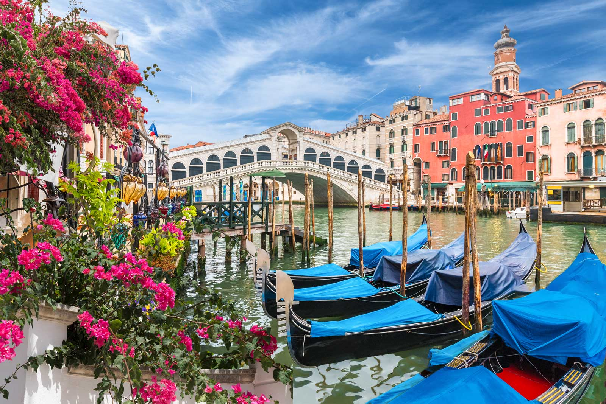
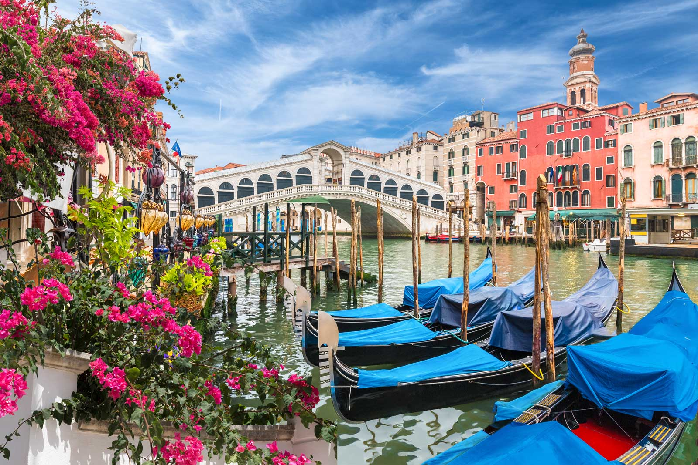

Welcome to Italy!
Italy is home to some of the most iconic landscapes, historical landmarks, and delicious food in the world. Whether you're looking to wander through ancient ruins or relax by the sea, Italy has something for everyone.
Famous Places to Visit
Rome

Explore the iconic Colosseum, Roman Forum, and Pantheon. Wander through the cobblestone streets of the historic center and visit the Trevi Fountain and Spanish Steps. Don’t miss the Vatican City, home to St. Peter's Basilica, the Sistine Chapel, and the Vatican Museums.
Florence
The heart of Renaissance art and architecture, Florence is home to the famous Duomo, Uffizi Gallery, and Michelangelo's David. Stroll along the Ponte Vecchio and explore charming piazzas and galleries in this culturally rich city.
Venice
Experience the romantic canals of Venice, glide through them on a gondola, and visit iconic landmarks like St. Mark’s Square, the Doge’s Palace, and the Rialto Bridge. Wander through the maze of narrow streets and discover the city's unique charm.
Amalfi Coast
Known for its dramatic cliffs, stunning beaches, and colorful villages, the Amalfi Coast is a must-see. Explore the picturesque towns of Positano, Ravello, and Amalfi, enjoy delicious seafood, and take in the breathtaking views of the Mediterranean Sea.
Pisa
Don’t miss the world-famous Leaning Tower of Pisa, a true marvel of engineering. Explore the beautiful Piazza dei Miracoli, home to the Cathedral and Baptistery, and enjoy the unique charm of this historic city.
Things You Can't Miss
- Gondola ride in Venice
- Cooking class in Tuscany
- Wine tasting in Chianti
- Hiking along the Amalfi Coast
Italy's Delicious Cuisine
Indulge in authentic Italian pizza, pasta, gelato, and more! Italy’s culinary scene is world-renowned for its incredible flavors, fresh ingredients, and regional specialties. From the thin-crust pizzas of Naples to the rich, creamy pastas of Bologna, every region offers something unique. Don’t miss out on classic dishes like lasagna, risotto, and spaghetti alla carbonara, or sample fresh seafood along the Amalfi Coast.
For dessert, Italy's gelato is a must-try—rich, creamy, and available in endless flavors. Pair your meal with a refreshing espresso or an Italian aperitivo like an Aperol Spritz to start your evening. Each bite is a taste of Italy's passion for food and tradition, making every meal an unforgettable experience.
Photo Gallery
 

Travel Tips
When traveling to Italy, always wear comfortable shoes and be prepared to walk! Many of Italy's charming cities have cobblestone streets and are best explored on foot, so comfortable footwear will ensure you enjoy the sights without any discomfort.!